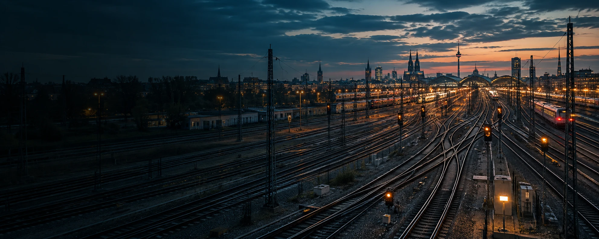

Railway Signaling Engineering & Modernization
Design. Development. Integration. Verification.
Engineering and technology solutions for safer, more reliable rail operations. From trackside to onboard, we help operators and OEMs modernize and maintain critical systems.
A proven track record
in railway engineering.
Across diverse networks
and environments.
Supporting operators
and OEMs worldwide.
Safety, interoperability
and long-term reliability.
Our Capabilities
From concept to operation, we deliver integrated engineering services across signaling, communication and control systems.
Signaling design, track circuits, interlockings, axle counters and wayside systems.
Safety-critical software, embedded firmware and application development for rail systems.
Ruggedized hardware design,
I/O systems, vital and non-vital equipment.
Integration across trackside,
control center and onboard systems.
Assessment, migration and modernization of aging infrastructure.
Independent verification, simulation, testing and assurance for safety-critical rail systems.
The Rail Ecosystem
A connected view from trackside to onboard,
across people, systems and data.
Signals, track circuits,
axle counters, wayside I/O
Platform systems,
passenger information,
station integration
Operations, monitoring,
event recording, data analytics
Train control interfaces,
driver advisory systems,
vehicle integration
A SAFER
MORE CONNECTED
RAILWAY
Our Experience
Real-world experience across a wide range of rail networks,
from urban transit to high-speed rail.
Urban and regional
passenger networks
Heavy-haul and
mixed traffic
High-frequency
urban transit
City and suburban
light-rail systems
Intercity and
national networks
High-speed
rail systems
Selected Work
Proven solutions delivered for real-world operational challenges.
View All ExperienceConnected Solutions
Real-time awareness. Proactive risk reduction.
A safer railway for communities.
A connected monitoring solution for level crossings, combining sensing, edge processing and cloud-based insights to detect faults, reduce risk and improve operational reliability.
Explore TraxSentinelGate position, approach
detection, environmental
monitoring
Secure data transmission
to cloud or control center
Local analytics
and fault detection
Health monitoring
and alerts
Real-time status,
reporting and insights
Our Foundation
We design and deliver solutions in alignment with applicable
industry standards and regulatory frameworks.